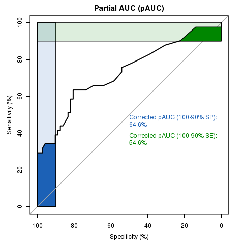
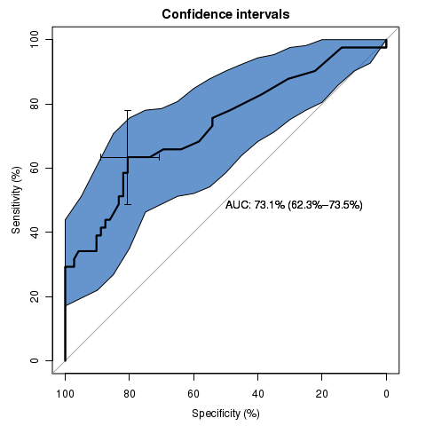
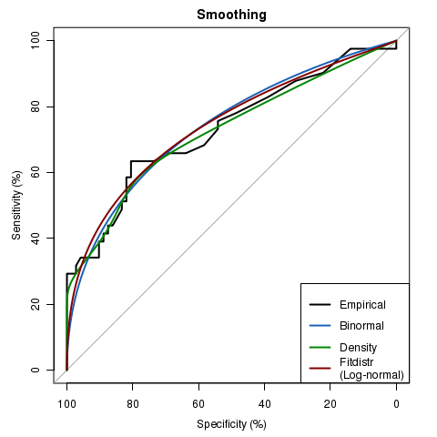
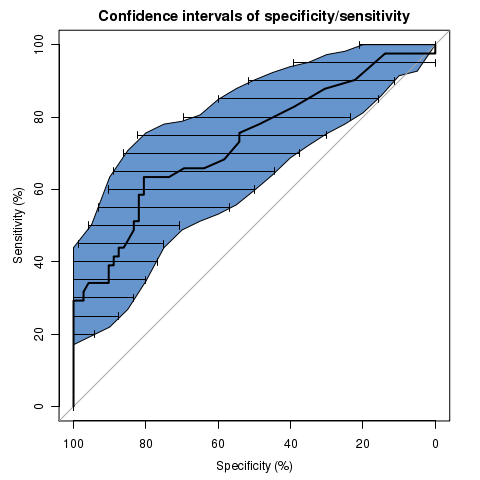
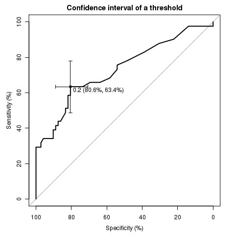
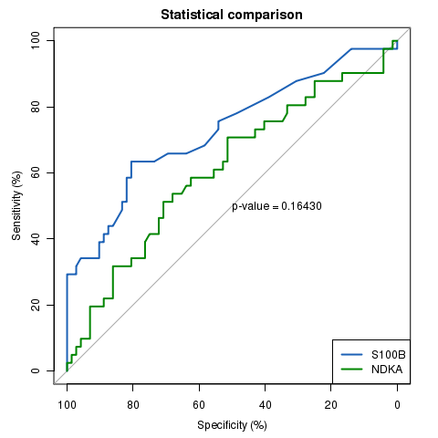

library(pROC)
data(aSAH)
plot.roc(aSAH$outcome, aSAH$s100b, # data
percent=TRUE, # show all values in percent
partial.auc=c(100, 90), partial.auc.correct=TRUE, # define a partial AUC (pAUC)
print.auc=TRUE, #display pAUC value on the plot with following options:
print.auc.pattern="Corrected pAUC (100-90%% SP):\n%.1f%%", print.auc.col="#1c61b6",
auc.polygon=TRUE, auc.polygon.col="#1c61b6", # show pAUC as a polygon
max.auc.polygon=TRUE, max.auc.polygon.col="#1c61b622", # also show the 100% polygon
main="Partial AUC (pAUC)")
plot.roc(aSAH$outcome, aSAH$s100b,
percent=TRUE, add=TRUE, type="n", # add to plot, but don't re-add the ROC itself (useless)
partial.auc=c(100, 90), partial.auc.correct=TRUE,
partial.auc.focus="se", # focus pAUC on the sensitivity
print.auc=TRUE, print.auc.pattern="Corrected pAUC (100-90%% SE):\n%.1f%%", print.auc.col="#008600",
print.auc.y=40, # do not print auc over the previous one
auc.polygon=TRUE, auc.polygon.col="#008600",
max.auc.polygon=TRUE, max.auc.polygon.col="#00860022")

library(pROC)
data(aSAH)
rocobj <- plot.roc(aSAH$outcome, aSAH$s100b,
main="Confidence intervals", percent=TRUE,
ci=TRUE, # compute AUC (of AUC by default)
print.auc=TRUE) # print the AUC (will contain the CI)
ciobj <- ci.se(rocobj, # CI of sensitivity
specificities=seq(0, 100, 5)) # over a select set of specificities
plot(ciobj, type="shape", col="#1c61b6AA") # plot as a blue shape
plot(ci(rocobj, of="thresholds", thresholds="best")) # add one threshold

library(pROC)
data(aSAH)
rocobj <- plot.roc(aSAH$outcome, aSAH$s100b, percent = TRUE, main="Smoothing")
lines(smooth(rocobj), # smoothing (default: binormal)
col = "#1c61b6")
lines(smooth(rocobj, method = "density"), # density smoothing
col = "#008600")
lines(smooth(rocobj, method = "fitdistr", # fit a distribution
density = "lognormal"), # let the distribution be log-normal
col = "#840000")
legend("bottomright", legend = c("Empirical", "Binormal", "Density", "Fitdistr\n(Log-normal)"), col = c("black", "#1c61b6", "#008600", "#840000"),lwd = 2)

library(pROC)
data(aSAH)
rocobj <- plot.roc(aSAH$outcome, aSAH$s100b,
main="Confidence intervals of specificity/sensitivity", percent=TRUE,
ci=TRUE, of="se", # ci of sensitivity
specificities=seq(0, 100, 5), # on a select set of specificities
ci.type="shape", ci.col="#1c61b6AA") # plot the CI as a blue shape
plot(ci.sp(rocobj, sensitivities=seq(0, 100, 5)), # ci of specificity
type="bars") # print this one as bars

library(pROC)
data(aSAH)
plot.roc(aSAH$outcome, aSAH$s100b,
main="Confidence interval of a threshold", percent=TRUE,
ci=TRUE, of="thresholds", # compute AUC (of threshold)
thresholds="best", # select the (best) threshold
print.thres="best") # also highlight this threshold on the plot

library(pROC)
data(aSAH)
rocobj1 <- plot.roc(aSAH$outcome, aSAH$s100,
main="Statistical comparison", percent=TRUE, col="#1c61b6")
rocobj2 <- lines.roc(aSAH$outcome, aSAH$ndka, percent=TRUE, col="#008600")
testobj <- roc.test(rocobj1, rocobj2)
text(50, 50, labels=paste("p-value =", format.pval(testobj$p.value)), adj=c(0, .5))
legend("bottomright", legend=c("S100B", "NDKA"), col=c("#1c61b6", "#008600"), lwd=2)